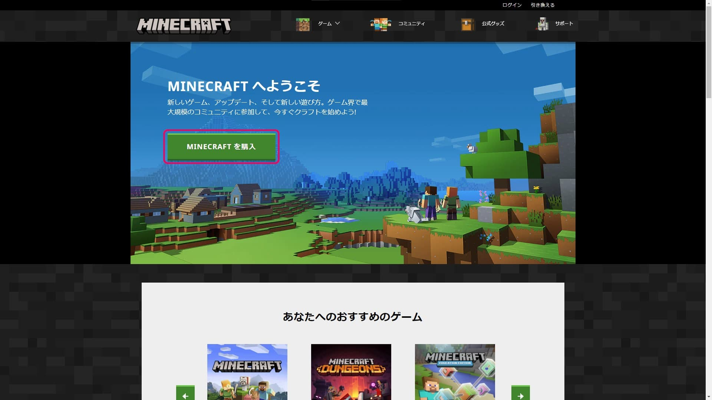
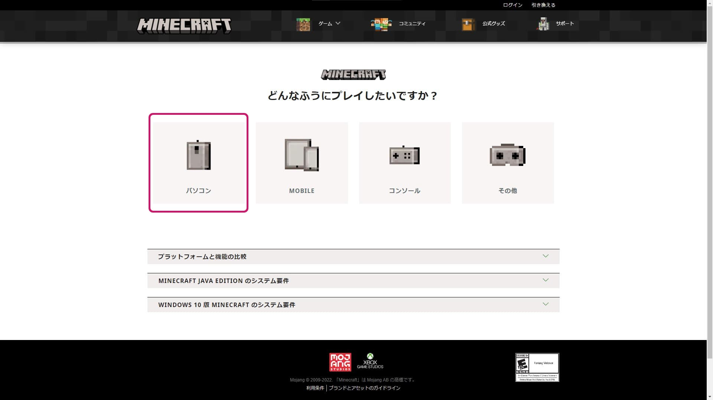
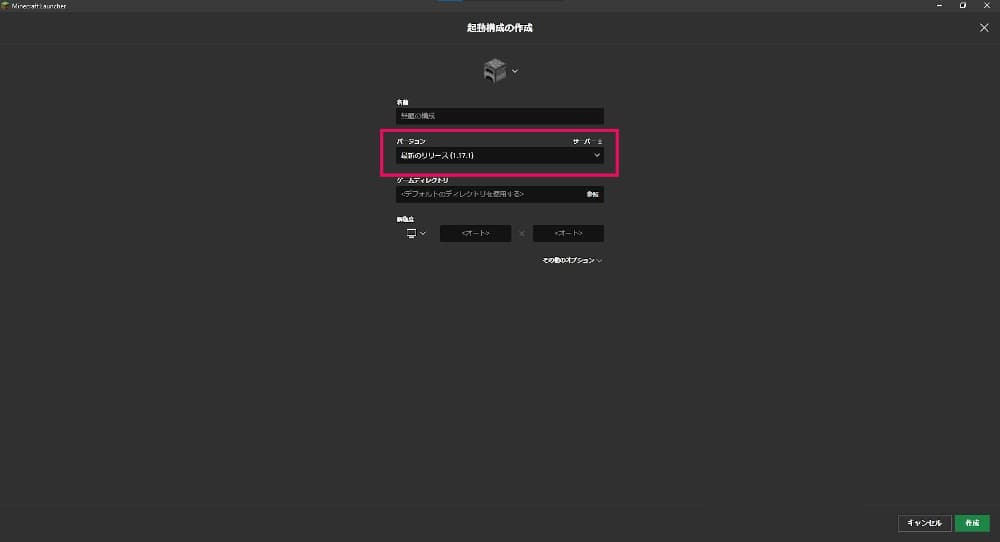
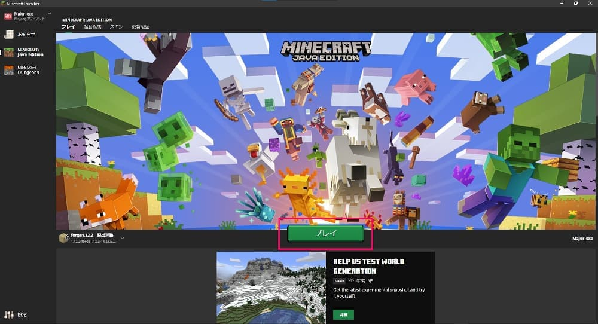
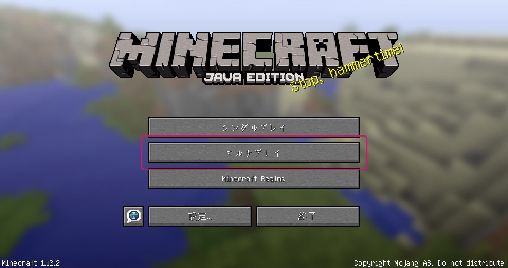
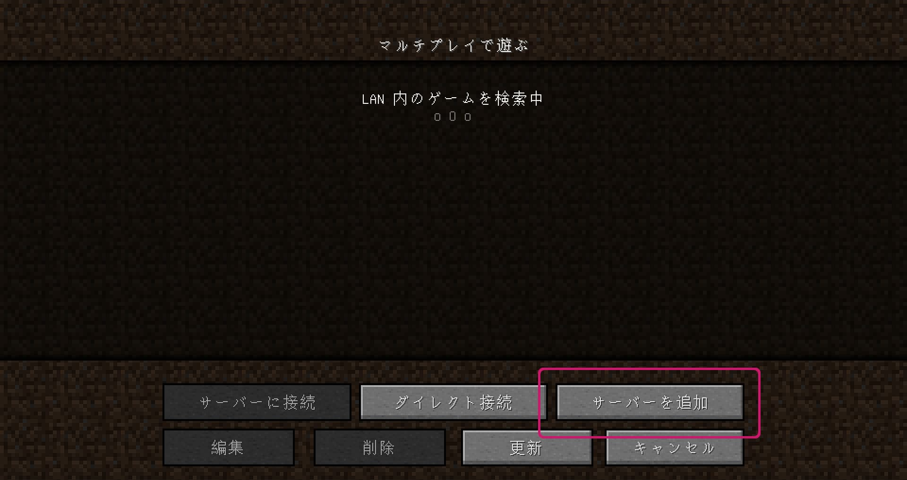
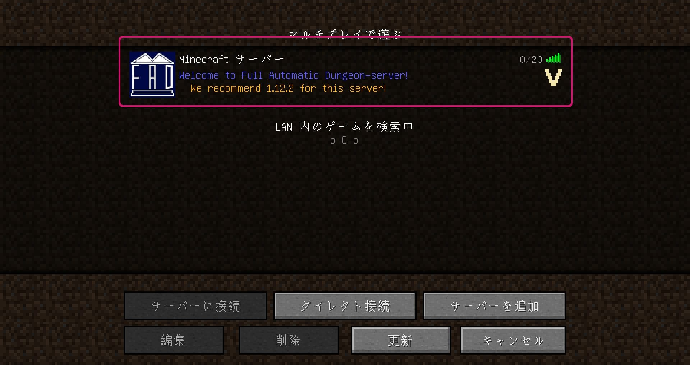

マインクラフト Java Edition を購入しましょう！
Minecraft公式サイトへとんで「MINECRAFT を購入」をクリック。
「パソコン版」を選ぶ。
自分の使っているOSを選択する。

「MINECRAFT:JAVA EDITION」を選択する。絶対、「MINECRAFT:JAVA EDITION」を選択する。
「MINECRAFT を購入」をクリックして、あとは画面の指示に従って購入する。

赤四角の部分をクリック

「New Installation」をクリック
「バージョン」をクリック

「release 1.12.2」をクリックし、「作成」をクリック
「プレイ」をクリック
「マルチプレイ」をクリック
「サーバーを追加」をクリック

「サーバーアドレス」に「FAD.f5.si」を入力し、「完了」をクリック
「Minecraft サーバー」をクリックして参加する。
下のボタンからリソースパックをダウンロードします。
「設定...」をクリック
「リソースパック...」をクリック

「リソースパックフォルダーを開く」をクリックし、開いたフォルダの中に先ほどダウンロードしたリソースパックを入れる。

FAD_Official_ResourcePackにカーソルを合わせて「▶」をクリックしてリソースパックを適用させる。